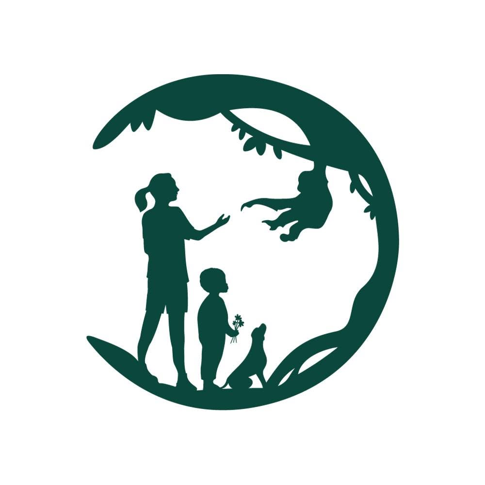
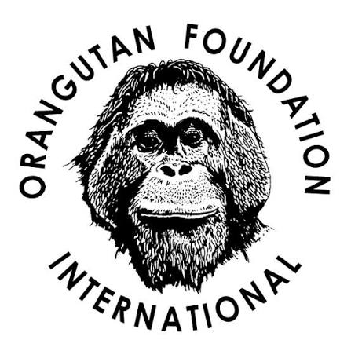

The plight of great apes
A spatial analysis of tree cover loss and protected area effectiveness, 2001–2025
Summary
“If we can’t save these animals, then there’s really very little hope for the rest of biodiversity. I just can’t imagine a world without these animals.”
— John Mitani (primatologist, University of Michigan)
This analysis examines 25 years of satellite-derived tree cover data within the ranges of all four great ape genera: chimpanzees, gorillas, bonobos, and orangutans. Between 2001 and 2025, forest cover in primary great ape range countries decreased by approximately 84 million hectares, a cumulative loss of 11.8% since 2000. The rate of forest loss is substantially lower in protected areas, by roughly 63% in Africa and 73% in Asia. Yet only a quarter of known great ape habitat falls within protected areas. The data suggest that protection helps, but far too little habitat is protected, and loss continues even within protected boundaries. Without urgent action, the forests these animals depend on may disappear within our lifetime. And with them, our closest relatives on Earth.
Overview
Great apes, our closest living relatives, are facing extinction. All four genera of non-human great apes, gorillas, chimpanzees, bonobos, and orangutans, are classified as either Endangered (EN) or Critically Endangered (CR) by the International Union for Conservation of Nature (IUCN). Without urgent action, there is a real possibility that current generations of humans will be the last to observe these animals in the wild.
The figure below displays the IUCN’s conservation status for each of the four great ape genera. Select a card to view population estimates of the species and subspecies in each genus. Estimates are drawn from IUCN Red List assessments (2017-2024). See Sources for full citations.

Orangutans
Critically Endangered
Click to learn more
Species and population estimates
| Species | Population* | Year | Status |
|---|---|---|---|
| Bornean | 104,700 | 2016 | CR |
| Sumatran | 13,846 | 2017 | CR |
| Tapanuli | 800 | 2017 | CR |
*Estimates are highly uncertain and based on infrequent ground surveys. Figures likely overestimate current populations.
Click to go back

Gorillas
Critically Endangered
Click to learn more
Subspecies and population estimates
| Species | Population* | Year | Status |
|---|---|---|---|
| Western Lowland | 362,000 | 2013 | CR |
| Cross River | 250 | 2015 | CR |
| Mountain | 1,000 | 2018 | EN |
| Grauer's | 3,800 | 2015 | CR |
*Estimates are highly uncertain and based on infrequent ground surveys. Figures likely overestimate current populations.
Click to go back

Chimpanzees
Endangered
Click to learn more
Subspecies and population estimates
| Species | Population* | Year | Status |
|---|---|---|---|
| Western | 18,000–65,000 | 2016 | EN |
| Nigeria-Cameroon | <6000 | 2015 | CR |
| Central | 140,000 | 2016 | EN |
| Eastern | 170,000–250,000 | 2015 | EN |
*Estimates are highly uncertain based on infrequent ground surveys. Figures likely overestimate current populations.
Click to go back

Bonobos
Endangered
Click to learn more
Unlike other great apes, bonobos have no recognized subspecies. They exist as a single population confined entirely to the Congo Basin.
A 2016 survey estimated the population of bonobos to be between 15,000 and 20,000 individuals.
Click to go back
Even when considering the upper bounds of these estimates, the total population of great apes remaining on Earth is just over 840,000 individuals, significantly less than the population of my home city of Montreal. Some species have declined by over 90% since the turn of the 20th century. Great apes face a range of human-driven threats, including poaching, civil conflict, disease transmission and the illegal wildlife trade, but it is largely agreed that the most pervasive threat to their existence in the wild is the destruction of their forest habitat.
Methodology
Scope
This analysis covers 12 countries representing the core great ape range across equatorial Africa and Southeast Asia: Cameroon, Central African Republic, Democratic Republic of the Congo, Gabon, Nigeria, Republic of the Congo, Rwanda, Burundi, Tanzania, Uganda, Indonesia, and Malaysia. Full native chimpanzee range extends further into West, Central, and Southern Africa, and is not represented here.
Data sources
Forest cover data is sourced from the Hansen Global Forest Change (GFC) dataset (GFC-2025-v1.13) (Hansen et al. 2013). Forest is defined as areas with a tree canopy cover greater than 10%, consistent with Global Forest Watch’s default threshold for tree cover loss. Tree cover gain was not considered in this analysis. The Hansen GFC gain layer reflects canopy regrowth over 2000-2012 as a whole, and is not available as an annual time series, rendering it incompatible for this analysis. Additionally, forest regrowth in the time period considered would be unlikely to reach the canopy structure to support great apes. Protected area boundaries are sourced from the World Database on Protected Areas (WDPA, UNEP-WCMC and IUCN, July 2026) (UNEP-WCMC and IUCN 2026). Great ape range polygons are sourced from the IUCN Red List of Threatened Species spatial data, compiled separately for each species. See Sources for full citations.
Approach
The protected area effectiveness analysis clips Hansen raster data to confirmed great ape range polygons and classifies pixels as inside or outside protected areas using WDPA boundaries, comparing annual and cumulative forest loss rates (as a percentage of 2000 forest extent) between the two groups.
Habitat loss
Most gorillas, chimpanzees and bonobos live in tropical rainforests across equatorial Africa, while orangutans are native to the forests of Southeast Asia, forests that are disappearing at an alarming rate due to human activity. The chart below illustrates the percentage and cumulative total tree cover loss in core great ape range countries from 2001 to 2025. Select the tabs to toggle between the two views. Annual loss is expressed as a percentage of each country’s forest extent in 2000; cumulative loss is shown in total hectares.
Oragutan habitat is under immense pressure. In just the last 25 years, forest cover in Malaysia and Indonesia has decreased by 33% and 20%, respectively. The tropical forests in these countries are the last places on Earth where wild orangutans exist. The primary drivers of deforestation in this region are the conversion of forest to permanent agriculture, inclduing palm oil plantations, and industrial logging (both legal and illegal). Wildfires linked to land clearing are an additional driver in Indonesia.
African countries inhabited by apes lost a combined 40.6 million hectares of forest between 2001 and 2025, an area larger than Germany. The Democratic Republic of the Congo, which contains crucial habitat for all three species of African great apes, accounts for more than half of this figure. In Africa, the leading cause of deforestation is agricultural expansion, with both permanent agriculture and shifting cultivation as dominant drivers.
The speed at which these forests are declining is alarming. Considering the other threats great ape populations face from encroaching humans (poaching, disease transmission), effective protection of their remaining habitat is vital.
Protected areas
One of the primary ways governments go about slowing deforestation is through the establishment of protected areas (PAs). Protected areas are clearly defined geographical spaces which are recognized and managed through a variety of legal and other means to conserve nature (Dudley 2008). With proper enforcement, PAs can be an effective strategy to protect wildlife. However, enforcement of protection varies widely around the world. A variety of factors, chief among them insufficient governmental capacity, corruption, and industrial/economic pressure, result in many areas only being nominally protected.
The IUCN classifies PAs into seven categories, ranging from restricted visitation outside of sanctioned scientific research to allowable resource extraction.
| Category | Description |
|---|---|
| Ia | Strict Nature Reserve: science only, no public access |
| Ib | Wilderness Area: minimal human impact |
| II | National Park: ecosystem protection, managed tourism |
| III | Natural Monument: protection of specific natural features |
| IV | Habitat/Species Management Area: active conservation management |
| V | Protected Landscape/Seascape: coexistence of people and nature |
| VI | Managed Resource Area: sustainable use of natural resources |
Many protected areas within great ape ranges are listed as ‘Not Applicable’ or ‘Not Reported’ in IUCN’s World Database on Protected Areas (WDPA), indicating incomplete reporting rather than absence of protection. For example, Volcanoes National Park in Rwanda, a critical mountain gorilla sanctuary, is listed without an IUCN category despite being a well-managed Category II national park.
The figure below shows protected areas overlaid with great ape ranges. Unlike the country-level figures above, the analysis that follows is confined specifically to land within these ranges, examining whether protection status meaningfully reduces forest loss. The Africa map groups species by genus (gorilla, chimpanzee, bonobo); the Asia map shows the three orangutan species individually, given their distinct ranges.
Protected areas within great ape ranges, Africa
Click layers to toggle species and protected areas on and off
■ Gorilla ■ Chimpanzee ■ Bonobo ■ Protected Areas
Data source: IUCN Red List of Threatened Species (2024); UNEP-WCMC and IUCN (2026), Protected Planet: The World Database on Protected Areas (WDPA)
What immediately jumps out from the figure is the large proportion of great ape ranges which have no protection status at all. Upon further analysis, the data shows that only 25.6% of known ape habitat ranges fall within protected areas. This 25.6% figure varies considerably by country, however. The figure below presents the percentage and cumulative amount of great ape range which falls within a protected area, broken down by country.
Great ape range and protected area coverage by country
| Country | Ape Range (Mha) | PA Coverage (Mha) | % Protected |
|---|---|---|---|
| Nigeria | 3.06 | 1.96 | 64.2 |
| Uganda | 2.03 | 1.29 | 63.6 |
| Rep. of Congo | 24.67 | 14.44 | 58.5 |
| Rwanda | 0.26 | 0.14 | 56.5 |
| Tanzania | 1.66 | 0.48 | 28.8 |
| Gabon | 25.47 | 6.71 | 26.3 |
| Indonesia | 23.56 | 5.07 | 21.5 |
| DR Congo | 123.03 | 25.49 | 20.7 |
| Malaysia | 4.92 | 1.01 | 20.5 |
| Cameroon | 23.49 | 4.22 | 18.0 |
| Central African Rep. | 12.78 | 1.92 | 15.0 |
| Burundi | 0.62 | 0.05 | 8.30 |
| Total | 245.55 | 62.78 | 25.6 |
Data source: IUCN Red List of Threatened Species (2024); UNEP-WCMC and IUCN (2026), Protected Planet: The World Database on Protected Areas (WDPA)
Notably, percentage coverage does not always track absolute protection. DR Congo has the largest area protected in this analysis by far, but it still represents just 20.7% of total great ape range, demonstrating that raw percentages can understate the scale of protection in large-range countries.
By contrast, Rwanda has one of the highest protection percentages, but a comparatively tiny ape range. That smaller, more concentrated range may have made sustained, effective conservation more achievable. Rwanda’s protected areas have contributed to one of the few success stories in great ape conservation, as its native mountain gorilla population is the only great ape taxon known to be increasing (Plumptre et al. 2019).
While important, coverage percentage alone cannot indicate enforcement quality. The following section examine whether protected status corresponds to measurably lower forest loss.
Does protection reduce forest loss?
Despite gerenally low coverage of protected areas within great ape range, their effectiveness is nonetheless an important consideration for conservation. If the protected areas demonstrably reduce habitat loss, this strengthens the case for their continued establishment and enforcement. The figure below shows cumulative and annual forest loss within and outside of established protected areas, both regionally and, using the menu, for individual countries.
As the figure shows, forest loss within protected areas was meaningfully lower than outside protected areas, by approximately 63% in Africa and 73% in Asia. The most dramatic effect is Malaysia, where forest loss inside protected areas (1.9%) was roughly 94% lower than outside (31.7%). This gap suggests that expanding protected coverage, currently just a fifth of Malaysia’s great ape range, may offer real conservation returns, though effectiveness likely depends on enforcement capacity.
Another interesting phenomeneon can be observed in Indonesia. Ranges within Indonesian protected areas have consistently lower forest loss than outside of them, but in 2016, this pattern reversed. Forest loss within protected areas increased to a full 1% greater than outside protected areas. This can be attributed to an especially disastrous wildfire season, showing that fire and other extreme climate events do not respect protection boundaries the way deliberate clearing or logging does.
The data also point to effective protection in Rwanda, where high protection percentages correspond to substantially reduced forest loss by over 10-fold (90.4% less), reinforcing the earlier point that Rwanda’s high coverage percentage reflects a real conservation outcome, not just a favorable statistic. However, Rwanda’s extremely small ape range is likely also a factor in this effectiveness; a smaller, more concentrated area may simply be easier to protect consistently than a larger one.
Republic of Congo offers a useful comparison. It has a much larger ape range, but a comparable protection percentage. Here, forest loss inside protected areas was only about 2% lower than outside over the full period (a 54.5% relative reduction), a far smaller gap than Rwanda’s. Concerningly, by 2024 and 2025, that gap had nearly disappeared, with loss rates inside and outside protected areas converging to nearly identical levels.
Conclusion
It is difficult to overstate the seriousness of the situation facing great apes in the wild today. All four genera are on the brink of extinction. The countries they inhabit lost a combined 84 million hectares of forest in just the past 25 years, a decerease of 11.8% compared to forest extent in 2000. The cause of forest loss varies by country, but the primary drivers are agricultural conversion and logging.
Governments have established protected areas to slow this trend. This analysis found that forest loss is substantially lower within protected areas in great ape ranges: 63% in African countries and 73% in Asian countries. While this is an encouraging result, only about a quarter of confirmed ape ranges fall within protected areas. Effectiveness also varies greatly by country. In Malaysia, the rate of forest loss was 94% less within protected great ape ranges, striking result that could support the case for further establishment and enforcement of PAs in the region. Conversely, the rate of loss in countries like the DR Congo and Republic of Congo was closer to 55-60% lower within PAs than outside of them - still meaningful, but a noticeably smaller effect. Protection also appears to be more effective against deliberate clearing and logging than against unpredictable climate events, as Indonesia’s 2015–16 fire season illustrated, when loss inside protected areas briefly exceeded loss outside them entirely.
It is beyond the scope of this analysis to explore what specific interventions have driven the large variation in effectiveness among countries. Enforcement capacity, funding, community engagement, remoteness, threat types (fire versus deliberate clearing, for instance), all likely play a role, and disentangling them would require research beyond what satellite-derived forest data alone can offer.
What the data do support is a clear, evidence-based starting point for where protection is working well, and where it may need more scrutiny, from Malaysia’s strong results to the narrowing gaps seen elsewhere. As habitat loss accelerates across great ape range, understanding whether the primary tool for protecting what remains is actually working matters more than ever.
Support great ape conservation
Great apes need our help, and we have a responsibility to protect them. Below are a few of the most reputable great ape conservation organizations. Click on the logos below to make a donation.

Dian Fossey Gorilla Fund
Supports the endangered mountain gorilla subspecies in the forests of Rwanda, Uganda and DR Congo

Jane Goodall Institute
Supports chimpanzee research, conservation, and community-centered conservation across Africa

Orangutan Foundation International
Supports orangutan conservation and rehabilitation across Borneo and Sumatra
About me
I’m currently working with the Multilateral Fund Secretariat, an entity of the United Nations Environment Programme. I have an academic background in environmental science and public policy, and a profound connection to great apes.
Sources
Show all sources
Ancrenaz, M., M. Gumal, A. J. Marshall, E. Meijaard, S. A. Wich, and S. Husson. 2024. Pongo pygmaeus (Amended Version of 2023 Assessment). The IUCN Red List of Threatened Species 2024: e.T17975A259043172. https://dx.doi.org/10.2305/IUCN.UK.2024-1.RLTS.T17975A259043172.en.
Dudley, N. 2008. Guidelines for Applying Protected Area Management Categories. IUCN. https://portals.iucn.org/library/node/9243.
Fruth, B., J. R. Hickey, C. André, et al. 2016. Pan paniscus. The IUCN Red List of Threatened Species 2016: e.T15932A102331567. http://dx.doi.org/10.2305/IUCN.UK.2016-2.RLTS.T15932A17964305.en.
Hansen, M. C., P. V. Potapov, R. Moore, et al. 2013. “High-Resolution Global Maps of 21st-Century Forest Cover Change.” Science 342 (6160): 850–53. https://doi.org/10.1126/science.1244693.
Humle, T., F. Maisels, J. F. Oates, A. Plumptre, and E. A. Williamson. 2016. Pan troglodytes. The IUCN Red List of Threatened Species 2016: e.T15933A129038584. http://dx.doi.org/10.2305/IUCN.UK.2016-2.RLTS.T15933A17964454.en.
IGCP and WCS. 2019. “Gorilla Beringei (Spatial Data).” In The IUCN Red List of Threatened Species. https://www.iucnredlist.org.
IUCN (International Union for Conservation of Nature). 2018. “Pan Troglodytes (Spatial Data).” In The IUCN Red List of Threatened Species. https://www.iucnredlist.org.
IUCN SSC A.P.E.S. Database. 2016. “Pan Paniscus (Spatial Data).” In The IUCN Red List of Threatened Species. https://www.iucnredlist.org.
Maisels, F., R. A. Bergl, and E. A. Williamson. 2018. Gorilla gorilla. The IUCN Red List of Threatened Species 2018: e.T9404A136250858. http://dx.doi.org/10.2305/IUCN.UK.2018-2.RLTS.T9404A136250858.en.
Meijaard, E., S. Ni’Matullah, R. A. Dennis, M. Ancrenaz, J. Sherman, and S. A. Wich. 2023. “Spatial Data for p. Pygmaeus Red Listing. Borneo Futures, Brunei Darussalam.” In The IUCN Red List of Threatened Species. https://www.iucnredlist.org.
Nowak, M. G., P. Rianti, S. A. Wich, E. Meijaard, and G. Fredriksson. 2024. Pongo tapanuliensis (Amended Version of 2023 Assessment). The IUCN Red List of Threatened Species 2024: e.T120588639A259042400. https://dx.doi.org/10.2305/IUCN.UK.2024-1.RLTS.T120588639A259042400.en.
Plumptre, A., M. M. Robbins, and E. A. Williamson. 2019. Gorilla beringei. The IUCN Red List of Threatened Species 2019: e.T39994A115576640. http://dx.doi.org/10.2305/IUCN.UK.2019-1.RLTS.T39994A115576640.en.
Singleton, I., S. A. Wich, M. Nowak, G. Usher, and S. S. Utami-Atmoko. 2024. Pongo abelii (Amended Version of 2023 Assessment). The IUCN Red List of Threatened Species 2024: e.T121097935A259045437. https://dx.doi.org/10.2305/IUCN.UK.2024-1.RLTS.T121097935A259045437.en.
UNEP-WCMC and IUCN (International Union for Conservation of Nature). 2016. “Gorilla Gorilla (Spatial Data).” In The IUCN Red List of Threatened Species. https://www.iucnredlist.org.
UNEP-WCMC, and IUCN. 2026. Protected Planet: The World Database on Protected Areas (WDPA). UNEP-WCMC; IUCN. https://www.protectedplanet.net.
Wich, S. A., S. Ni’Matullah, J. Sherman, and E. Meijaard. 2023a. “Spatial Data for p. Abelii Red Listing. Borneo Futures, Brunei Darussalam.” In The IUCN Red List of Threatened Species. https://www.iucnredlist.org.
Wich, S. A., S. Ni’Matullah, J. Sherman, and E. Meijaard. 2023b. “Spatial Data for p. Tapanuliensis Red Listing. Borneo Futures, Brunei Darussalam.” In The IUCN Red List of Threatened Species. https://www.iucnredlist.org.